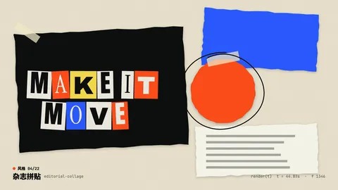

<!doctype html><html lang="zh-CN"><meta charset="utf-8"><meta name="viewport" content="width=device-width,initial-scale=1"><title>动效风格图鉴 · Motion Showreel</title>
<style>
*{box-sizing:border-box}body{margin:0;background:#f5f3eb;color:#252921;font:15px/1.65 "PingFang SC",sans-serif}header,main,footer{max-width:1380px;margin:auto;padding:22px clamp(16px,5vw,68px)}header{display:flex;justify-content:space-between;align-items:center;border-bottom:1px solid #c7c8b9}header b{letter-spacing:2px}button,select,input,textarea{font:inherit;color:inherit}button,select{cursor:pointer}button,select,input,textarea{border:1px solid #b9bcad;border-radius:6px;background:#fffdf6;padding:8px 12px}button:hover,button:focus-visible{border-color:#374830;background:#ebefd9}.primary{background:#304b35;color:white;border-color:#304b35}.hero{display:grid;grid-template-columns:1.05fr 1fr;background:#e5e8d8;margin:6px 0 28px;overflow:hidden;border-radius:8px}.intro{padding:clamp(22px,4vw,50px)}.intro small{font-family:Georgia,serif;letter-spacing:2px}.intro h1{font:700 clamp(33px,5vw,72px)/1.15 "Songti SC",serif;margin:15px 0}.intro p{max-width:32em;margin:8px 0}.hero img{width:100%;height:100%;max-height:305px;object-fit:cover}.filters,.actions{display:flex;flex-wrap:wrap;gap:8px;align-items:center}.filters input{flex:1;min-width:200px}.examples{margin:9px 0 18px}.examples button{background:transparent;border:0;padding:3px 10px;text-decoration:underline}.grid{display:grid;grid-template-columns:repeat(auto-fill,minmax(min(260px,100%),1fr));gap:20px}.card{padding:0;border:1px solid #cbd0be;overflow:hidden;text-align:left;background:#fffdf7;border-radius:8px}.card img,.card canvas,.customBlank{display:block;width:100%;aspect-ratio:16/9;object-fit:cover;background:#e5e8d8}.customBlank{display:grid;place-items:center}.body{padding:14px 17px 18px}.meta,small{font-size:12px;color:#50604d}.body h2{font-size:21px;margin:4px 0}.body p{font-size:14px;margin:0}.count{color:#606957;margin:14px 0}.detailImg img,.detailImg canvas{width:100%;display:block;max-height:320px;object-fit:contain}.dlg{width:min(640px,94vw);max-height:90svh;overflow:auto;border:1px solid #bbc2ae;border-radius:10px;padding:22px;background:#faf9f1}.dlg::backdrop{background:#162319aa}.bar{display:flex;justify-content:space-between;align-items:center;gap:10px}.bar h2{margin:0}.dlg label{display:block;margin-top:12px}.dlg input:not([type=file]),.dlg textarea{display:block;width:100%}.dlg textarea{min-height:86px}.dlg h3{font-size:16px;margin-bottom:5px}.note{font-size:13px;color:#5b6056}.actions{margin-top:12px}footer{margin-top:25px;border-top:1px solid #ccc}#msg{position:fixed;bottom:20px;left:50%;transform:translateX(-50%);color:white;background:#263a2a;padding:7px 17px;border-radius:5px;z-index:5}#msg:empty{display:none}@media(max-width:660px){.hero{grid-template-columns:1fr}.hero img{height:130px}.intro{padding:20px}.grid{gap:12px}header{padding-top:12px;padding-bottom:12px}.body{padding:12px}}
#farmCanvas{width:100%;height:auto;display:block;border-radius:5px}.sampleNav,.scrub{display:flex!important;align-items:center;gap:8px}.sampleNav{justify-content:space-between;margin:10px 0}.scrub span{white-space:nowrap;font:13px monospace}.scrub input{flex:1;min-width:0}.dlg #player:not([hidden])~#visual{display:none}.card .body small{display:block}.sampleNav button{padding:6px 10px}</style>
<header><b>Motion Showreel</b><button class="primary" id="add">＋ 补充风格</button></header><main>
<section class="hero"><div class="intro"><small>MOTION STYLE LIBRARY</small><h1>动效风格图鉴</h1><p>记不住名字也能选。搜一种感觉，点开卡片，看同一段「令人向往的农场」五秒片头如何换一种风格。</p></div></section>
<div class="filters"><input id="search" type="search" aria-label="搜索风格" placeholder="试试：像杂志、温暖、复古、植物工厂"><select id="group" aria-label="风格类别"><option value="">全部类别</option></select><select id="scope" aria-label="查看范围"><option value="">全部风格</option><option value="mine">我的补充</option></select></div><div class="examples">找灵感 <button>显影实验室</button><button>光影与介质</button><button>机械与手作</button><button>开源灵感扩展</button><button>江东村</button><button>科技感</button><button>像手绘</button><button>课程讲解</button><button>清除筛选</button></div><p id="count" class="count"></p><section class="grid" id="grid"></section></main>
<footer><div class="actions"><button id="backup">备份我的补充</button><button id="restore">导入备份</button><input type="file" id="jsonfile" accept=".json" hidden></div><p class="note">个人条目保存在当前浏览器。换设备或移动网页前，先导出备份。内置目录来自 motion-showreel v0.2.1。<a href="https://github.com/ConardLi/garden-skills/tree/f2d7adeaf53dcce3d0eb19cbffe8c04f4c636c2a/skills/motion-showreel">查看原始风格库</a></p></footer>
<dialog id="detail" class="dlg"><div class="bar"><h2 id="name"></h2><button data-close>关闭</button></div><p id="detailMeta" class="note"></p><section id="player" hidden><canvas id="farmCanvas" width="960" height="540" aria-label="令人向往的农场动效小样"></canvas><div class="sampleNav"><button id="previous" aria-label="上一款风格">← 上一款</button><button id="togglePlay">暂停</button><button id="next" aria-label="下一款风格">下一款 →</button></div><label class="scrub"><span id="clockLabel">0 / 5 秒</span><input id="scrubber" type="range" min="0" max="5" step=".01" value="0" aria-label="小样播放进度"></label></section><div class="detailImg" id="visual"></div><p id="about"></p><p><a id="styleSource" target="_blank" rel="noopener" hidden></a></p><h3>一眼认出的细节</h3><ul id="signals"></ul><p id="fit"></p><label>这次想做什么<input id="topic" value="江东村 15 秒竖屏片头"></label><label>调用话术（可直接改）<textarea id="prompt"></textarea></label><div class="actions"><button id="copy" class="primary">复制调用话术</button><button id="adapt">存成我的风格</button></div><p id="copymsg" role="status"></p></dialog>
<dialog id="form" class="dlg"><form id="entry"><div class="bar"><h2>补充我的风格</h2><button type="button" data-close>关闭</button></div><label>给它起个名字<input id="titleIn" required maxlength="80" placeholder="例如：江东村蓝底人物册"></label><label>你喜欢什么画面、怎么动<textarea id="descIn" required placeholder="例如：人物像拍立得卡片，出场轻轻转一下"></textarea></label><label>感觉或用途<input id="tagsIn" placeholder="例如：亲切、村里人物、系列片头"></label><label>参考图（可选）<input id="pic" type="file" accept="image/jpeg,image/png,image/webp"></label><p class="note" id="picHint"></p><button class="primary">保存风格</button><span role="status" id="formmsg"></span></form></dialog><div id="msg" role="status"></div><script src="内置风格.js"></script><script src="示意.js"></script><script src="农场小样.js"></script><script src="机械与手作.js"></script><script src="光影与介质.js"></script><script src="显影实验室.js"></script><script src="扩展风格.js"></script><script src="图鉴.js"></script></html>
